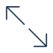

3256 possible organisms
⚠️ 512 high risk
99+ snakes
🕷️ 52 spiders
🌿 12 plants
High Risk
Pseudechis australisElapidaeElapinaePseudechisaustralis
Australia

- First Aid
- Diagnosis
- Treatment
- Lab Findings
First Aid
First aid for Australian and New Guinean snakebites

Create safe distance from Snake.
Immobilise and calm victim. Most snake bites from venemous snakes DO NOT ENVENOMATE the victim. If envenomated, it will take hours or days to spread through the system. Modern treatment is highly effective.
Don't handle the wound. The wound must not be wiped or cleaned in any way, as this may interfere with later venom detection and the wound must not be massaged.
Remove jewelery on bitten limb. All rings or other jewellery on the bitten limb, especially on fingers, should be removed, as they may act as tourniquets if oedema develops.
Key features
Local pain & swelling
myolysis
anticoagulant coagulopathy
renal failure
Treatment
Bites by mulga snakes are characterized by local pain, swelling and systemic myolysis, occasionally anticoagulant coagulopathy, and secondary renal failure. Rarely, there may be evidence of mild paralysis, usually limited to ptosis only. Probably most bites will develop at least some systemic envenoming, so many cases will require antivenom therapy. Admit all cases of definite or suspected bites.
On presentation, establish a good IV line, commence IV fluids, take bloods for initial tests ("extended coagulation tests" = PT/INR, aPTT, fibrinogen level***, FDP/XDP, platelet count; CK, urea, creatinine, WCC, K+), perform venom detection on the bite site (if uncertain of identity of snake). (*** fibrinogen level is only useful if it can be reliably measured to very low levels; many labs are unable to do this or may use indirect measurement and in this setting fibrinogen is not a useful test and could be omitted)Unless contraindicated by pre-existing medical conditions, give an IV fluid load (1L over 2-3 hrs in an adult; volume determined by weight in a child), then keep well hydrated thereafter (100-150 mL/hr in an adult), while carefully watching for fluid overload, monitoring fluid input and output. If a first aid bandage is in place over the bitten limb, leave on until the blood tests, venom detection and full examination are complete and results available. To perform venom detection cut away the bandage immediately over the bite area, to swab for venom. Keep the cut-away bandages, in case they are needed later for venom detection.
If the patient presents with envenoming clearly established, or blood tests show evidence of systemic envenoming (high and/or rising CK, less commonly an anticoagulant coagulopathy, with prolonged PT/INR, aPTT, but normal fibrinogen level and normal or barely elevated FDP/XDP), then commence antivenom therapy prior to removal of first aid. Initial dose should be 1 vial of CSL Black Snake AV IV (only in severe cases would >1 vial be needed initially), diluted up to 1:10 (less in children, to avoid volume overload), with adrenaline ready to treat anaphylaxis, should this occur.
Repeat blood tests 3 hrs after completion of initial dose of antivenom therapy, to determine if myolysis has been arrested (no further or minimal rise in CK) and any coagulopathy reversed (PT/INR and aPTT falling towards normal). If the CK has continued to climb dramatically, consider giving further antivenom. If the 3hr tests suggest improvement then wait 2-3 hrs and retest. If there is continued improvement, it is likely no further antivenom will be needed. If, however, there has been no improvement or worsening, give further antivenom. The role of antivenom in reversing myolysis is controversial, but given the potential lethality of severe myolysis, further antivenom therapy should always be considered.
For cases where initial blood tests show no sign of either myolysis (CK) or anticoagulant coagulopathy, no antivenom is required at this stage, but repeat tests 2-3 hrs and 5-6 hrs later and if these show developing envenoming, treat with antivenom, as discussed earlier.
For cases with myolysis, CK may rise to very high levels, >100,000 IU/L. This is accompanied by muscle pain, tenderness and weakness in most cases. There will also be gross myoglobinuria (red to black urine) and the risk of renal failure. Hyperkalaemia can develop secondary to myolysis and is more severe if there is secondary renal failure. It can cause cardiotoxicity and is potentially lethal and may be difficult to treat.
The anticoagulant coagulopathy is only rarely associated with significant bleeding and in most cases will be rapidly and completely reversed by antivenom therapy. It is distinguished from the defibrination commonly seen with bites by some other Australian snakes (brown snakes, tiger snakes, taipans etc) by the normal fibrinogen level and absence of high levels of FDP/XDP.
Mulga snake bites commonly develop both local pain and swelling. The latter may be quite extensive, but local necrosis is rare. The swelling may take several days to > week to settle fully and may look like cellulitis. If there is a strong suspicion of secondary infection with cellulitis, then antibiotic therapy, initially IV, is required, but in most cases of mulga snake bites, antibiotics are not required. Tetanus immunisation status should always be checked and a booster given when indicated, but not until any coagulopathy has been reversed.